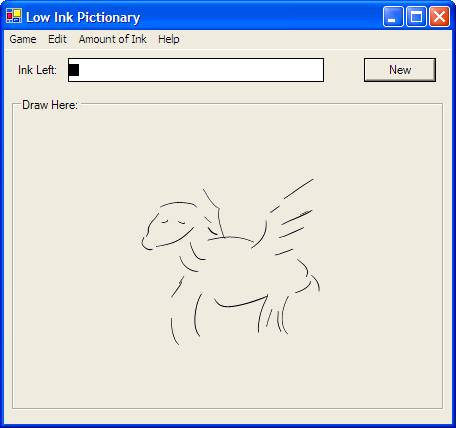

| | Low Ink Pictionary
For the Tablet PCEssentially, Low Ink Pictionary is a drawing board, but with a limited amount of ink. So you can only draw a few lines. Now, if your playing Pictionary, this can make things very interesting because you have to be able to express as much as you can with what little ink you have left. It not only improves your Pictionary skills, but also you general artistic skills, forcing you to draw only that which is absolutely neccasary. Low Ink Pictionary has been featured at the major hubs for Tablet PC news Tablet PC Buzz.com and Tabula PC This program is in no way associated with the Milton Bradly company, nor it's very cool game Pictionary. It is merely recommended as a fun way to liven the game up and give it a new twist for old players. More Of My Tablet PC Applications... UPDATE - 8/27/2003 - Add those little check marks next to the current amount of ink being used.
UPDATE - 8/25/2003 - Posted the source code, see below
UPDATE - 8/25/2003 - Added the contest mode, so that your opponent has to draw using the same amount of ink as you used. Makes for a far more personal game
LowInkPictionary.exe
Platform: Windows, with .Net and Ink
Note: Best played on a Tablet, but will run
on any computer with .Net and Ink
|

The above was done with 'Amount of Ink' set to High, so that the demo pic every one sees doesn't totally embarrass me. I assure you most drawings will use less ink, and will cause a fair amount of laughter from your friends. Oh and if your wondering, it's Pegasus. |